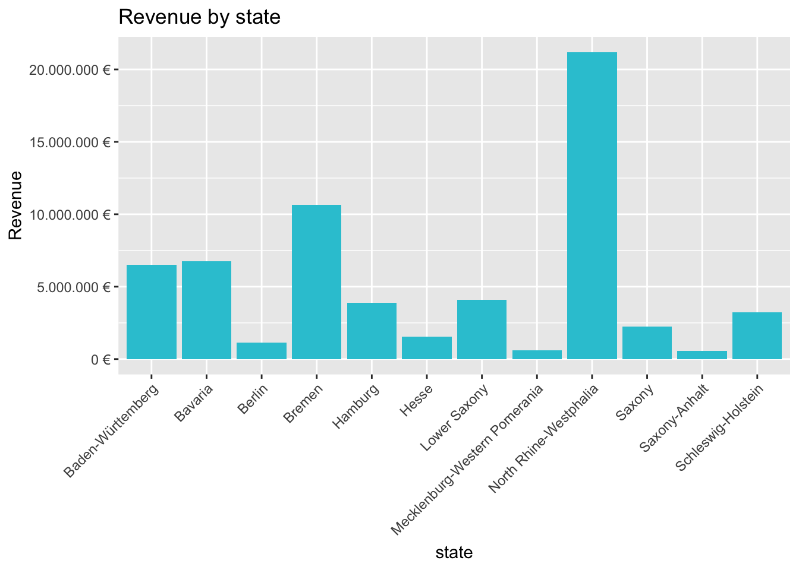
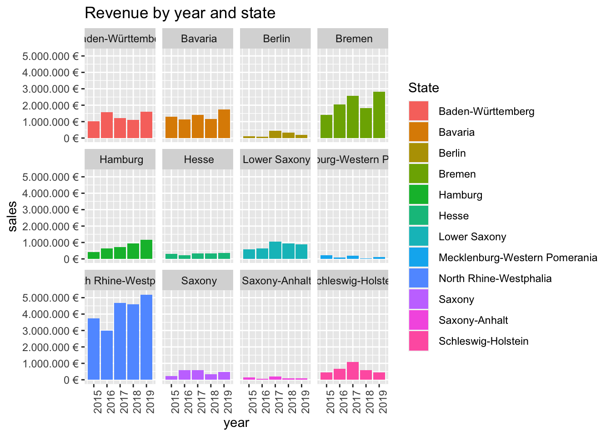
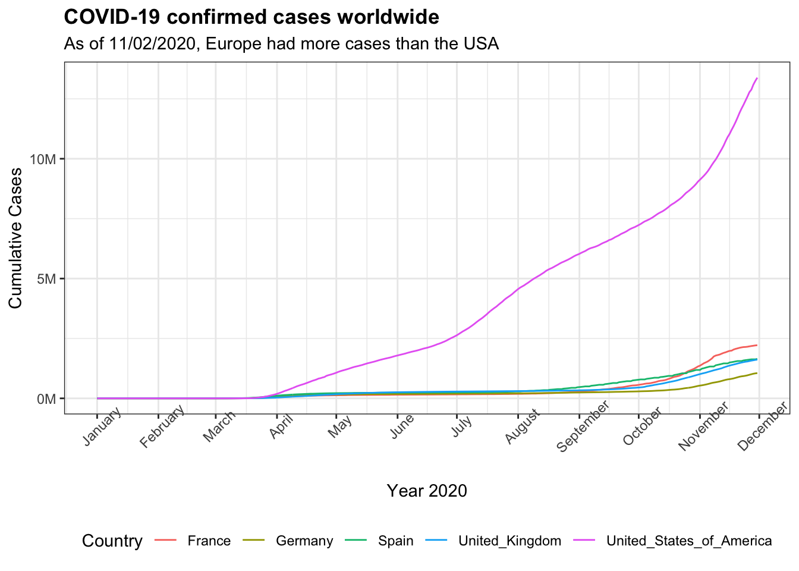
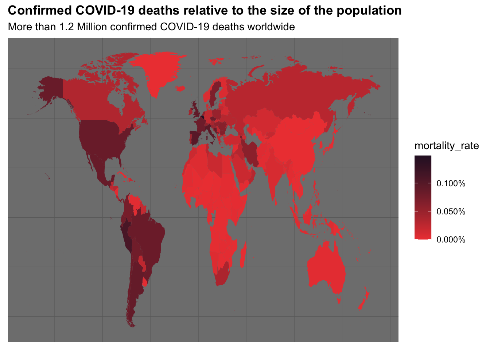

#Challenge 1 -Introduction to the Tidyverse ----
#1.0 Load packages ----
library(tidyverse)
library(readxl)
#2.0 Import Files ----
# A good convention is to use the file name and suffix it with tbl for the data structure tibble
bikes_tbl <- read_excel(path = "~/Documents/Github/Business Data Basics/DS_101/00_data/01_bike_sales/01_raw_data/bikes.xlsx")
orderlines_tbl <- read_excel("~/Documents/Github/Business Data Basics/DS_101/00_data/01_bike_sales/01_raw_data/orderlines.xlsx")
# Not necessary for this analysis, but for the sake of completeness
bikeshops_tbl <- read_excel("~/Documents/Github/Business Data Basics/DS_101/00_data/01_bike_sales/01_raw_data/bikeshops.xlsx")
#3.0 Joining Data ----
left_join(orderlines_tbl, bikes_tbl, by = c("product.id" = "bike.id"))## # A tibble: 15,644 x 15
## ...1 order.id order.line order.date customer.id product.id quantity
## <chr> <dbl> <dbl> <dttm> <dbl> <dbl> <dbl>
## 1 1 1 1 2015-01-07 00:00:00 2 2681 1
## 2 2 1 2 2015-01-07 00:00:00 2 2411 1
## 3 3 2 1 2015-01-10 00:00:00 10 2629 1
## 4 4 2 2 2015-01-10 00:00:00 10 2137 1
## 5 5 3 1 2015-01-10 00:00:00 6 2367 1
## 6 6 3 2 2015-01-10 00:00:00 6 1973 1
## 7 7 3 3 2015-01-10 00:00:00 6 2422 1
## 8 8 3 4 2015-01-10 00:00:00 6 2655 1
## 9 9 3 5 2015-01-10 00:00:00 6 2247 1
## 10 10 4 1 2015-01-11 00:00:00 22 2408 1
## # … with 15,634 more rows, and 8 more variables: model <chr>, model.year <dbl>,
## # frame.material <chr>, weight <dbl>, price <dbl>, category <chr>,
## # gender <chr>, url <chr># Chaining commands with the pipe and assigning it to order_items_joined_tbl
bike_orderlines_joined_tbl <- orderlines_tbl %>%
left_join(bikes_tbl, by = c("product.id" = "bike.id")) %>%
left_join(bikeshops_tbl, by = c("customer.id" = "bikeshop.id"))
#4.0 Data Wrangling ----
bike_orderlines_wrangled_tbl <- bike_orderlines_joined_tbl %>%
# 4.1 Separate category name
separate(col = category,
into = c("category.1", "category.2", "category.3"),
sep = " - ") %>%
# 4.2 Add the total price (price * quantity)
# Add a column to a tibble that uses a formula-style calculation of other columns
mutate(total.price = price * quantity) %>%
# 4.3 Optional: Reorganize. Using select to grab or remove unnecessary columns
# 4.3.1 by exact column name
select(-...1, -gender) %>%
# 4.3.2 by a pattern
# You can use the select_helpers to define patterns.
# Type ?ends_with and click on Select helpers in the documentation
select(-ends_with(".id")) %>%
# 4.3.3 Actually we need the column "order.id". Let's bind it back to the data
bind_cols(bike_orderlines_joined_tbl %>% select(order.id)) %>%
# 4.3.4 You can reorder the data by selecting the columns in your desired order.
# You can use select_helpers like contains() or everything()
select(order.id, contains("order"), contains("model"), contains("category"),
price, quantity, total.price,
everything()) %>%
# 4.4 Rename columns because we actually wanted underscores instead of the dots
# (one at the time vs. multiple at once)
rename(bikeshop = name) %>%
set_names(names(.) %>% str_replace_all("\\.", "_"))
#Check location multiple features (State and city)
#bike_orderlines_wrangled_tbl$location
#Probably unecessary code but also helps to see just the location column
bike_orderlines_wrangled_tbl %>%
select(location) %>%
filter(str_detect(location, "^Hamburg")) ## # A tibble: 975 x 1
## location
## <chr>
## 1 Hamburg, Hamburg
## 2 Hamburg, Hamburg
## 3 Hamburg, Hamburg
## 4 Hamburg, Hamburg
## 5 Hamburg, Hamburg
## 6 Hamburg, Hamburg
## 7 Hamburg, Hamburg
## 8 Hamburg, Hamburg
## 9 Hamburg, Hamburg
## 10 Hamburg, Hamburg
## # … with 965 more rows#data wrangling for challenge starts here
#4.5 Separate location into state and city
bike_orderlines_wrangled2_tbl <- bike_orderlines_wrangled_tbl %>%
separate(col = location,
into = c("city", "state"),
sep = (","))
#5.0 Business Insights ----
#5.1 Sales by location (state) ----
#step 1: Manipulate
sales_by_state_tbl <- bike_orderlines_wrangled2_tbl %>%
# Select columns
select(state, total_price) %>%
# Grouping by state and summarizing sales
group_by(state) %>%
summarize(sales = sum(total_price)) %>%
# Add a column that turns the numbers into a currency format
# mutate(sales_text = scales::dollar(sales)) <- Works for dollar values
mutate(sales_text = scales::dollar(sales, big.mark = ".",
decimal.mark = ",",
prefix = "",
suffix = " €"))
sales_by_state_tbl## # A tibble: 12 x 3
## state sales sales_text
## <chr> <dbl> <chr>
## 1 " Baden-Württemberg" 6521090 6.521.090 €
## 2 " Bavaria" 6742819 6.742.819 €
## 3 " Berlin" 1128433 1.128.433 €
## 4 " Bremen" 10653499 10.653.499 €
## 5 " Hamburg" 3874756 3.874.756 €
## 6 " Hesse" 1558901 1.558.901 €
## 7 " Lower Saxony" 4107115 4.107.115 €
## 8 " Mecklenburg-Western Pomerania" 618974 618.974 €
## 9 " North Rhine-Westphalia" 21200613 21.200.613 €
## 10 " Saxony" 2230245 2.230.245 €
## 11 " Saxony-Anhalt" 569614 569.614 €
## 12 " Schleswig-Holstein" 3224749 3.224.749 € #Plot bar chart(This is for Rmarkdown. Not sure how to use that just about yet)
#```{r plot, fig.width=10, fig.height=7}
#step 2: Visualize
#plot a bar chart
sales_by_state_tbl %>%
# Setup canvas with the columns year (x-axis) and sales (y-axis)
ggplot(aes(x = state, y = sales)) +
# Geometries
geom_col(fill = "#2DC6D6") + # Use geom_col for a bar plot
#geom_label(aes(label = sales_text)) + # Adding labels to the bars
#geom_smooth(method = "lm", se = FALSE) + # Adding a trendline
# Formatting
# scale_y_continuous(labels = scales::dollar) + # Change the y-axis.
# Again, we have to adjust it for euro values
scale_y_continuous(labels = scales::dollar_format(big.mark = ".",
decimal.mark = ",",
prefix = "",
suffix = " €")) +
labs(
title = "Revenue by state",
#subtitle = "Upward Trend",
x = "state", # Override defaults for x and y
y = "Revenue")+
theme(axis.text.x = element_text(angle = 45, hjust = 1))#rotate x-axis 
#5.2 Sales by location(State) and year ----
library(lubridate)
#step 1: Manipulate
sales_by_year_by_state_tbl <- bike_orderlines_wrangled2_tbl %>%
# Select columns and add a year
select(order_date, total_price, state) %>%
mutate(year = year(order_date)) %>%
# Group by and summarize year and state
group_by(year, state) %>%
summarise(sales = sum(total_price)) %>%
ungroup() %>%
# Format $ Text
mutate(sales_text = scales::dollar(sales, big.mark = ".",
decimal.mark = ",",
prefix = "",
suffix = " €")) %>%
arrange(desc(sales))
sales_by_year_by_state_tbl## # A tibble: 60 x 4
## year state sales sales_text
## <int> <chr> <dbl> <chr>
## 1 2019 " North Rhine-Westphalia" 5189507 5.189.507 €
## 2 2017 " North Rhine-Westphalia" 4671541 4.671.541 €
## 3 2018 " North Rhine-Westphalia" 4601681 4.601.681 €
## 4 2015 " North Rhine-Westphalia" 3735092 3.735.092 €
## 5 2016 " North Rhine-Westphalia" 3002792 3.002.792 €
## 6 2019 " Bremen" 2808838 2.808.838 €
## 7 2017 " Bremen" 2557145 2.557.145 €
## 8 2016 " Bremen" 2057760 2.057.760 €
## 9 2018 " Bremen" 1833844 1.833.844 €
## 10 2019 " Bavaria" 1730872 1.730.872 €
## # … with 50 more rows #step 2: visualize
#Plot bar chart(facet_wrap)
sales_by_year_by_state_tbl %>%
# Set up x, y, fill
ggplot(aes(x = year, y = sales, fill = state)) +
# Geometries
geom_col() + # Run up to here to get a stacked bar plot
# Facet
facet_wrap(~ state) +
# Formatting
scale_y_continuous(labels = scales::dollar_format(big.mark = ".",
decimal.mark = ",",
prefix = "",
suffix = " €")) +
labs(
title = "Revenue by year and state",
fill = "State" # Changes the legend name
)+
theme(axis.text.x = element_text(angle = 90, hjust = 1))
#6.0 Write files into excel ----
#6.1 Excel ----
library("writexl")
bike_orderlines_wrangled2_tbl %>%
write_xlsx("~/Documents/GitHub/Business Data Basics/DS_101/00_data/01_bike_sales/02_wrangled_data/bike_orderlines2.xlsx")
# 6.2 CSV ----
bike_orderlines_wrangled2_tbl %>%
write_csv("~/Documents/GitHub/Business Data Basics/DS_101/00_data/01_bike_sales/02_wrangled_data/bike_orderlines2.csv")
# 6.3 RDS ----
bike_orderlines_wrangled2_tbl %>%
write_rds("~/Documents/GitHub/Business Data Basics/DS_101/00_data/01_bike_sales/02_wrangled_data/bike_orderlines2.rds")Last compiled: 2020-12-05
#Challenge 2.0 : Data Acquisition ----
#Load Relevant Packages
library(glue)
library(httr)
library(purrr)
library(tidyverse)
library(rvest)
library(xopen)
library(jsonlite)
library(stringi)
library(jsonlite)
#2.1: Data from an API ----
#Task: Get some data via an API.
# use whatever service you want.
#Trying this API thing using a foodwebsite API I found. Hopefully, it works :)
#appid and appkey already saved in .Renviron file
edamam_url <- "https://api.edamam.com/search"
edamam_data<- GET(edamam_url, query = list('q' = "chicken",
app_id = Sys.getenv("appid"),
app_key = Sys.getenv("appkey"),
from = 0,
to = 3,
calories = "591-722",
health = "alcohol-free"
))
edamam_data## Response [https://api.edamam.com/search?q=chicken&app_id=9c291d20&app_key=c33bb890134b0839ed0518bc2ccbeb41&from=0&to=3&calories=591-722&health=alcohol-free]
## Date: 2020-11-27 18:20
## Status: 200
## Content-Type: application/json;charset=UTF-8
## Size: 29.2 kB#to show the content of edamam_data
#edanam_data$content
#To convert the raw Unicode into a character vector that resembles the JSON format
#rawToChar(edamam$content)
#To convert into list data use fromJSON() library
#To show the content of the obtained data, change it from a raw data to actual characters
#and jsonformat and then turn it into a list from Json.
edamam_data_list <- edamam_data %>%
.$content %>%
rawToChar() %>%
fromJSON() %>%
#Extract totalnutrients from list
purrr::pluck("hits", "recipe", "totalNutrients", "FAT")
edamam_data_list## label quantity unit
## 1 Fat 174.3594 g
## 2 Fat 176.0753 g
## 3 Fat 174.1931 g#2.2: Web Scraping ----
#Task: Scrape one of the competitor websites of canyon
#(either https://www.rosebikes.de/ or https://www.radon-bikes.de)
#create a small database.
#database should contain the "model names" and "prices" for
#"at least one category".
#Print the first 10 rows of your tibbles.
#Do not publish your credentials.
#2.2.1 Bicycle Categories ----
#assign the URL to a variable
rosebikes_category_url <- "https://www.rosebikes.de/fahrr%C3%A4der"
xopen(rosebikes_category_url)## Running open 'https://www.rosebikes.de/fahrr%C3%A4der'#read in the html from the URL
rosebikes_category_html <- rosebikes_category_url %>%
read_html()
# Select the correct html nodes and extract the category
rosebikes_categories_tbl <-rosebikes_category_html %>%
html_nodes(css =".catalog-navigation__list-item > a ") %>%
html_attr("title") %>%
#turn the vector into a table
enframe(name = "position", value = "category")
rosebikes_categories_tbl## # A tibble: 12 x 2
## position category
## <int> <chr>
## 1 1 MTB
## 2 2 Rennrad
## 3 3 Gravel
## 4 4 E-Bike
## 5 5 Cyclocross
## 6 6 Trekking
## 7 7 Fitness
## 8 8 Reise
## 9 9 Urban
## 10 10 Kinder
## 11 11 Sale
## 12 12 Bike-Finder###so far everything works well up to here.
#2.2.2 Model and Price ----
#now to get the models under "kinder"
rosebikes_kinder_url <- "https://www.rosebikes.de/fahrr%C3%A4der/kinder"
#xopen(rosebikes_kinder_url)
### read in the html from the URL
rosebikes_kinder_html <- rosebikes_kinder_url %>%
read_html()
#get data from JSON format about the model name and price
rosebikes_kinder_json_tbl <- rosebikes_kinder_html %>%
html_nodes(css = ".catalog-product-tile__link") %>%
html_attr("onclick")
#remove "window.dataLayer.push(" and ")"
rosebikes_kinder_tbl <- rosebikes_kinder_json_tbl %>%
str_remove_all("window.dataLayer.push\\(") %>%
str_remove("\\)$") %>%
# Convert the JSON format to dataframe
# map runs that function on each element of the list
map(fromJSON) %>% # need JSON ### need lists
# Extract relevant information of the nested list
map(purrr::pluck, "ecommerce","click","products") %>% # Need purrr and expl above
# Stack all lists together
bind_rows() %>%
# Convert to tibble so that we have the same data format
as_tibble()
rosebikes_kinder_tbl## # A tibble: 10 x 8
## name id price brand category variant list position
## <chr> <chr> <chr> <chr> <chr> <chr> <chr> <chr>
## 1 "Seeker … 230187… 399.95 Early R… Fahrräder/Kinde… aluminium… categ… 1
## 2 "Belter … 230186… 399.95 Early R… Fahrräder/Kinde… aluminium… categ… 2
## 3 "NOOB" 227196… 129 ROSE Fahrräder/Kinde… dark blue… categ… 3
## 4 "Belter … 230186… 379.95 Early R… Fahrräder/Kinde… aluminium… categ… 4
## 5 "Seeker … 230457… 599 Early R… Fahrräder/Kinde… aluminium… categ… 5
## 6 "Belter … 230186… 649 Early R… Fahrräder/Kinde… aluminium… categ… 6
## 7 "Seeker … 230457… 724.95 Early R… Fahrräder/Kinde… aluminium… categ… 7
## 8 "Seeker … 230187… 399.95 Early R… Fahrräder/Kinde… aluminium… categ… 8
## 9 "Belter … 230186… 549.99 Early R… Fahrräder/Kinde… aluminium… categ… 9
## 10 "Charger… 230186… 169.95 Early R… Fahrräder/Kinde… aluminium… categ… 10#1. Libraries ----
library(glue)
library(httr)
library(purrr)
library(tidyverse)
library(rvest)
library(xopen)
library(jsonlite)
library(stringi)
library(jsonlite)
library(readxl)
library(lubridate)
library("writexl")
library(vroom)
library(data.table)
library(tictoc)
library(magrittr)
# 2.0 DATA IMPORT ----
#Data to Import:assignee,patent_assignee,patent,uspc
####FOR THE REDUCED DATA
# patent_tbl: "id”, "date”, "num_claims"
# patent_assignee_tbl: "patent_id”, "assignee_id"
# assignee_tbl: "id”, "type”, "organization"
# uspc_tbl: "patent_id”, "mainclass_id”, "sequence"
# Question Table
# 1 assignee, patent_assignee
# 2 assignee, patent_assignee, patent
# 3 assignee, patent_assignee, uspc
#2.1 Assignee Data ----
assignee_col_types <- list(
id = col_character(),
type = col_character(),
organization = col_character()
)
assignee_tbl <- vroom(
file = "~/Documents/GitHub/Business Data Basics/DS_101/00_data/Patent_data_reduced/assignee.tsv",
delim = "\t",
col_types = assignee_col_types,
na = c("", "NA", "NULL")
)
#2.2 Patent_assignee Data ----
patent_assignee_col_types <- list(
patent_id = col_character(),
assignee_id = col_character()
)
patent_assignee_tbl <- vroom(
file = "~/Documents/GitHub/Business Data Basics/DS_101/00_data/Patent_data_reduced/patent_assignee.tsv",
delim = "\t",
col_types = patent_assignee_col_types,
na = c("", "NA", "NULL")
)
#2.3 Patent Data ----
patent_col_types <- list(
id = col_character(),
date = col_date("%Y-%m-%d"),
num_claims = col_double()
)
patent_tbl <- vroom(
file = "~/Documents/GitHub/Business Data Basics/DS_101/00_data/Patent_data_reduced/patent.tsv",
delim = "\t",
col_types = patent_col_types,
na = c("", "NA", "NULL")
)
#2.4 USPC data
uspc_col_types <- list(
patent_id = col_character(),
mainclass_id = col_character(),
sequence = col_character()
)
uspc_tbl <- vroom(
file = "~/Documents/GitHub/Business Data Basics/DS_101/00_data/Patent_data_reduced/uspc.tsv",
delim = "\t",
col_types = uspc_col_types,
na = c("", "NA", "NULL")
)
#3.0 Check for class and Set as data.table
#Check class
class(assignee_tbl)## [1] "tbl_df" "tbl" "data.frame"class(patent_assignee_tbl)## [1] "tbl_df" "tbl" "data.frame"class(patent_tbl)## [1] "tbl_df" "tbl" "data.frame"class(uspc_tbl)## [1] "tbl_df" "tbl" "data.frame"#SetDT
setDT(assignee_tbl)
setDT(patent_assignee_tbl)
setDT(uspc_tbl)
setDT(patent_tbl)
#QUESTION1:Patent Dominance ----
#What US company / corporation has the most patents? List the 10 US companies
#with the most assigned/granted patents.
#Step1: Join data(assignee and patent assignee)
#data.table code
# patent_dominance_tbl <- merge(x = assignee_tbl, y = patent_assignee_tbl,
# by = c("id" = "assignee_id"),
# all.x = TRUE,
# all.y = FALSE)
# patent_dominance_tbl %>% glimpse()
#
patent_dominance_tbl <- assignee_tbl %>%
left_join(patent_assignee_tbl, by = c("id" = "assignee_id"))
patent_dominance_tbl %>% glimpse()## Rows: 315,910
## Columns: 4
## $ id <chr> "org_004j997jM9yEdS7z4ReD", "org_004j997jM9yEdS7z4ReD", …
## $ type <chr> "3", "3", "3", "2", "2", "3", "3", "2", "3", "3", "2", "…
## $ organization <chr> "University of Basel", "University of Basel", "Zetkama S…
## $ patent_id <chr> "8728438", "8921361", "8857791", "8845559", "8645286", "…#Step2: Summarize data
patent_dominance_tbl %>%
filter(!is.na(organization)) %>%
group_by(organization) %>%
summarise(patent_dominance = n()) %>%
ungroup() %>%
arrange(desc(patent_dominance))%>%
slice(1:10)## # A tibble: 10 x 2
## organization patent_dominance
## <chr> <int>
## 1 International Business Machines Corporation 7547
## 2 Samsung Electronics Co., Ltd. 5835
## 3 Canon Kabushiki Kaisha 4099
## 4 Sony Corporation 3326
## 5 Microsoft Corporation 3165
## 6 Google Inc. 2668
## 7 Kabushiki Kaisha Toshiba 2656
## 8 QUALCOMM Incorporated 2597
## 9 LG Electronics Inc. 2459
## 10 Panasonic Corporation 2218###Everything works well till here
class(patent_dominance_tbl)## [1] "data.table" "data.frame"#QUESTION2: Recent patent acitivity ----
#What US company had the most patents granted in 2019? List the top 10 companies
#with the most new granted patents for 2019.
#Step1: Join data(assignee, patent_assignee(patent_dominance_tbl), patent)
#CHANGE COLUMN_NAME IN PATENT_TBL, ID=PATENT_ID
setnames(patent_tbl, "id", "patent_id")
recent_patent_activity_tbl <- patent_dominance_tbl%>%
left_join(patent_tbl, by = "patent_id")
#Step2: Summarize data by organization and Year
recent_patent_activity_date_tbl <- recent_patent_activity_tbl %>%
separate(col = date,
into = c("year", "month", "day"),
sep = "-", remove = FALSE)
recent_patent_activity_date_tbl %>%
filter(!is.na(organization)) %>%
filter(month == 10) %>%
group_by(organization) %>%
summarise(recent_patent_activity = n()) %>%
ungroup() %>%
arrange(desc(recent_patent_activity)) %>%
slice(1:10)## # A tibble: 10 x 2
## organization recent_patent_activity
## <chr> <int>
## 1 International Business Machines Corporation 670
## 2 Samsung Electronics Co., Ltd. 551
## 3 Canon Kabushiki Kaisha 330
## 4 Sony Corporation 275
## 5 Kabushiki Kaisha Toshiba 249
## 6 Google Inc. 244
## 7 LG Electronics Inc. 226
## 8 Microsoft Corporation 223
## 9 QUALCOMM Incorporated 219
## 10 Apple Inc. 154#QUESTION3: Innovation in Tech ----
#What is the most innovative tech sector?
#For the top 10 companies (worldwide) with the most patents, what are the top 5
#USPTO tech main classes?
# This is a 2-step-approach:
#
# Get the patents of the Top10 companies (not only US corporations) with the most patents.
# Get the top 5 USPTO tech main classes, their patents are assigned to.
#Step1: Join data(assignee, patent_assignee(patent_dominance_tbl), uspc)
innovation_in_tech_tbl <- patent_dominance_tbl%>%
left_join(uspc_tbl, by = "patent_id")
top_10_patents <- innovation_in_tech_tbl %>%
select(organization, patent_id, mainclass_id) %>%
group_by(organization,mainclass_id) %>%
summarise(top_10 = n()) %>%
ungroup() %>%
arrange(desc(top_10))
top_10_patents %>%
select(organization,mainclass_id)%>%
filter(!is.na(mainclass_id)) %>%
group_by(mainclass_id) %>%
summarise(top_5_USPO = n()) %>%
ungroup %>%
arrange(desc(top_5_USPO)) %>%
slice(1:5)## # A tibble: 5 x 2
## mainclass_id top_5_USPO
## <chr> <int>
## 1 435 2474
## 2 514 2431
## 3 424 2295
## 4 705 1775
## 5 709 1759#STEP 1: LOAD LIBRARIES ----
library(tidyverse)
library(lubridate)
library(ggthemes)
#STEP 2: LOAD DATA ----
covid_data_tbl <- read_csv("https://opendata.ecdc.europa.eu/covid19/casedistribution/csv")
#Question 1: Cumulative Covid-19 cases----
#Goal: Map the time course of the cumulative Covid-19 cases! Your plot should look like this:
#Data Manipulation
cumulative_cases_tbl <- covid_data_tbl %>%
filter(year == 2020) %>%
filter(countriesAndTerritories %in% c("Germany", "United_Kingdom", "France", "Spain", "United_States_of_America")) %>%
filter(month %in% c(1:11)) %>%
select(month,dateRep, countriesAndTerritories, cases) %>%
mutate(date = dmy(dateRep)) %>%
arrange(date) %>%
group_by(countriesAndTerritories) %>%
mutate(cum_cases = cumsum(cases)) %>%
ungroup ()
#Data Visualization
cumulative_cases_tbl %>%
#Canvas
ggplot(aes(x = date, y =cum_cases, color = countriesAndTerritories)) +
#Geometries
geom_line(size = 0.5, linetype = 1) +
# geom_label(aes(label = label_txt),
# hjust = "inward",
# size = 2) +
#
#Formatting
expand_limits(y = 0.0) +
scale_x_date(breaks = "1 month", date_labels = "%B") +
# scale_x_continuous(breaks = cumulative_cases_tbl$month,
# labels = month(cumulative_cases_tbl$date, label = T)) +
scale_y_continuous(labels = scales::dollar_format(scale = 1/1e6,
big.mark = ".",
decimal.mark = ",",
prefix = "",
suffix = "M")) +
# breaks = seq(0, 000000, by =8)) +
labs(
title = "COVID-19 confirmed cases worldwide",
subtitle = "As of 11/02/2020, Europe had more cases than the USA",
x = "Year 2020",
y = "Cumulative Cases",
color = "Country") +
theme_bw() +
theme(legend.position = "bottom",
legend.direction = "horizontal",
axis.text.x = element_text(angle = 45),
plot.title = element_text(face = "bold")
)
#Question 2 ----
# Goal: Visualize the distribution of the mortality rate (deaths / population) with
# geom_map().
library(maps)
world <- map_data("world")
covid_mortality_rate_tbl <- covid_data_tbl %>%
select(countriesAndTerritories, deaths, popData2019, continentExp) %>%
group_by(countriesAndTerritories, popData2019)%>%
summarise(sum_deaths_country = sum(deaths)) %>%
mutate(mortality_rate = sum_deaths_country / popData2019) %>%
ungroup() %>%
# Hint (data wrangling):You have to join the lat/long data and the covid data. Unfortunately,
# the countries are not named identically in each dataset. You can adjust the data with the following code chunk
mutate(across(countriesAndTerritories, str_replace_all, "_", " ")) %>%
mutate(countriesAndTerritories = case_when(
countriesAndTerritories == "United Kingdom" ~ "UK",
countriesAndTerritories == "United States of America" ~ "USA",
countriesAndTerritories == "Czechia" ~ "Czech Republic",
TRUE ~ countriesAndTerritories
))
Map_tbl <- covid_mortality_rate_tbl %>%
left_join(world, by = c( "countriesAndTerritories" = "region")) %>%
rename(region = countriesAndTerritories)
#Data Visualization
Map_tbl %>%
ggplot() +
geom_map(aes(map_id = region, fill = mortality_rate ), map = world ) +
expand_limits(x= Map_tbl$long, y =Map_tbl$lat) +
scale_fill_gradient(low = "#ee4540", high = "#2d142c", labels = scales::percent) +
labs(
title = "Confirmed COVID-19 deaths relative to the size of the population",
subtitle = "More than 1.2 Million confirmed COVID-19 deaths worldwide",
x = " ",
y = " ",
color = "Mortality Rate") +
theme_dark() +
theme(legend.position = "right",
legend.direction = "vertical",
plot.title = element_text(face = "bold"),
axis.title = element_blank(),
axis.text = element_blank(),
axis.ticks = element_blank()
)
Last compiled: 2020-12-05